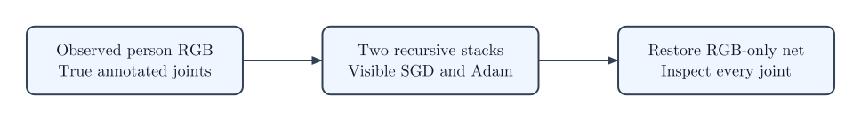
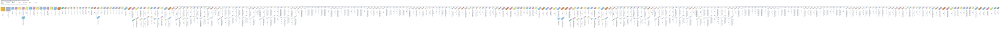
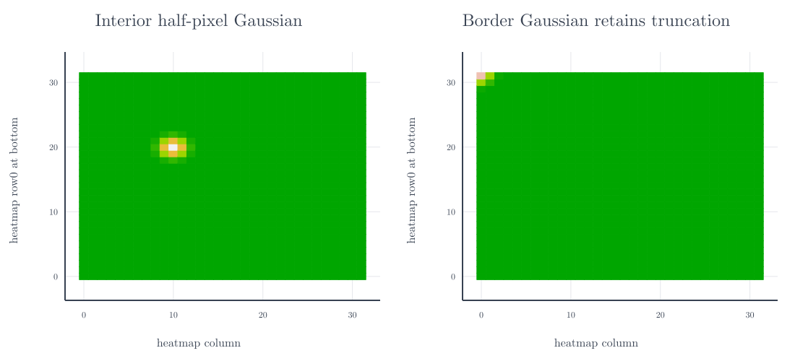
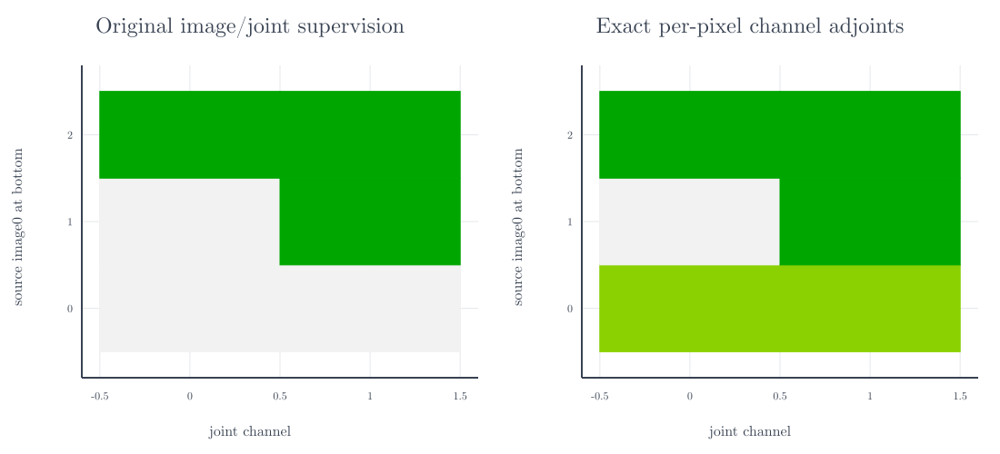
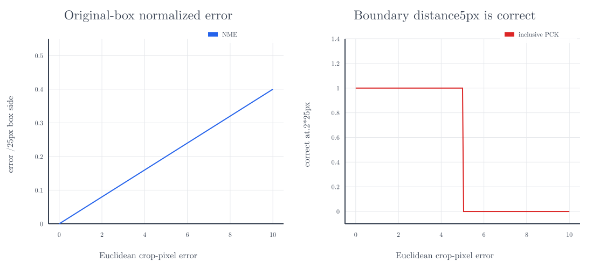
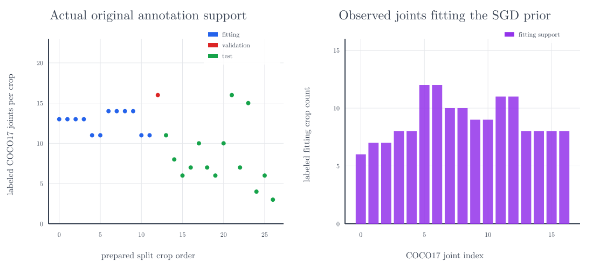
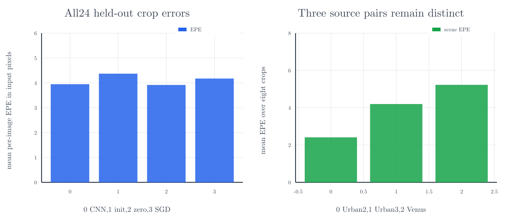
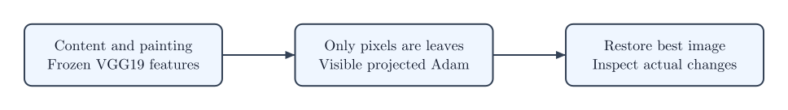
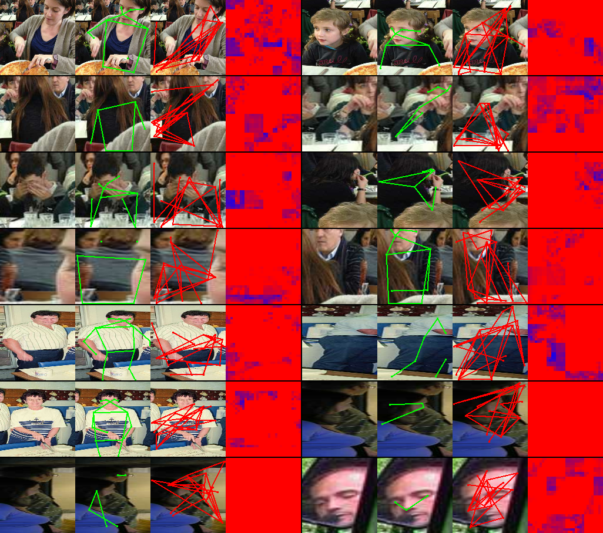

Stacked hourglass:visible tensor supervision on real person crops
Abstract
Use actual source-image-disjoint COCO8-Pose oracle crops and tensor Gaussian targets. Explain missing-channel-safe loss,preactivation residuals,two recursive hourglasses and learned prediction feedback. Show a visibly SGD-fitted coordinate prior and all18 Adam updates,restore separate RGB-only inference with immutable BN state,and compare every held-out joint and actual skeleton preview.
Source example: examples/cpp/source/nn/1_convolutional_neural_networks/1.8_other_vision_tasks/stacked_hourglass.cpp.
The method
Observed RGB feeds a complete two-stack depth4 hourglass. Both raw joint heads receive explicit masked Gaussian supervision. The report owns all learned leaves,BN state,SGD reference fitting,Adam minibatches and paired validation checkpoint. Numeric crop preparation,targets,decoding,PCK and skeleton rasterization use tensors;original source identities keep the tiny data experiment interpretable.
The concept diagram below is drawn by dm::graphics::Diagram. Its editable C++
source is the complete block below; regeneration uses the same datamunge toolchain
as the numerical examples. Exports consume the saved local SVG.
#include <dm/dm.hpp>
int main() {
std::filesystem::create_directories("build");
dm::graphics::Diagram diagram;
diagram.node("n0", {0.0, 0}, "Observed person RGB\nTrue annotated joints");
diagram.node("n1", {5.2, 0}, "Two recursive stacks\nVisible SGD and Adam");
diagram.node("n2", {10.4, 0}, "Restore RGB-only net\nInspect every joint");
diagram.edge("n0", "n1").edge("n1", "n2");
diagram.save_svg("build/stacked_hourglass_concept.svg");
}
Executed tensor architecture
This figure executes the inference configuration shown in the code, using a zero-valued shape probe without fitting or loading a checkpoint. Named stage boundaries group whole subgraphs where available; other nodes retain functional-layer detail. Exact batch-inclusive shapes and reachable parameter totals come from the trace. Shared linear scales map spatial dimensions and channel counts to blocks; the one-pixel visibility floor is disclosed in the legend. Labels use compact monospace text, rotate counterclockwise and sit beside their own glyphs. Arrows flow left to right; wide diagrams scroll at native size on the website.
#include <dm/dm.hpp>
int main() {
namespace n = dm::nn;
namespace m = n::models;
n::set_num_threads(2);
std::filesystem::create_directories("build");
const auto config = m::CompactHourglassConfig();
n::ParameterStore p(173), state(179);
n::Module architecture_model(
[&](const n::Tensor& image) {
return m::StackedHourglass(p, state, image, config).heatmaps.back();
},
"Stacked hourglass:visible tensor supervision on real person crops");
n::ModelPlotOptions options;
options.style = n::ModelPlotStyle::Flow;
options.detail = n::ModelPlotDetail::Blocks;
options.labels = {.type = n::ModelPlotLabel::NameAndShape, .size = 12, .wrap = 24};
options.spacing = {.layer = 24, .lane = 12, .label = 8, .margin = 20};
options.sizing.spatial_size = 96;
options.sizing.channel_size = 42;
options.sizing.minimum_extent = 1;
options.opacity = .8;
const auto diagram = architecture_model.plot(n::zeros({1, 128, 128, 3}), options);
diagram.save_svg("build/stacked_hourglass_architecture.svg");
std::print(
"{} displayed nodes; {} reachable learned values.\n",
diagram.nodes().size(),
diagram.parameter_count());
}386 displayed nodes; 110450 reachable learned values.

Gaussian supervision respects original annotation support
COCO visibility1 and2 both supervise;visibility0 is missing,not a zero-location label. Map input-pixel coordinates to heatmap centers with (x+.5)*side/input_size-.5. Unnormalized Gaussians truncate each axis at3*sigma. Out-of-image or nonfinite positions produce a masked zero channel. Target construction uses detached tensors,so these coordinates are not optimized. The border fixture preserves truncation rather than renormalizing kernel mass.
#include <dm/dm.hpp>
int main() {
namespace n = dm::nn;
namespace m = n::models;
const auto joints = n::tensor({41.5, 81.5, 2., 0., 127., 1., NAN, NAN, 0.}, {1, 3, 3});
const auto targets = m::PoseHeatmaps(joints);
const auto decoded = m::DecodePoseHeatmaps(targets.heatmap);
std::print("Visibility1+2 active;missing NaN support0. Decoded target coordinates:{}\n", decoded);
auto a = n::plot_tensor_map(
n::reverse(n::select(n::select(targets.heatmap, 0, 0), 2, 0), {0}), 0, 1),
b = n::plot_tensor_map(
n::reverse(n::select(n::select(targets.heatmap, 0, 0), 2, 1), {0}), 0, 1);
a.title("Interior half-pixel Gaussian")
.x_label("heatmap column")
.y_label("heatmap row0 at bottom");
b.title("Border Gaussian retains truncation")
.x_label("heatmap column")
.y_label("heatmap row0 at bottom");
auto layout = dm::graphics::RLayout::create(1, 2);
layout.add(a).add(b).size(1100, 500).fit_panels().save_svg(
"build/stacked_hourglass_gaussian.svg");
}Visibility1+2 active;missing NaN support0. Decoded target coordinates:float32[1, 3, 3] [[[41.5, 81.5, 1], [1.5, 125.5, 0.868815], [1.5, 1.5, 0]]]

Missing channels cannot contaminate the loss
Each image first averages MSE over its own annotated joint channels and all spatial pixels. Then supported images have equal weight. Empty images are excluded;all-empty input gives a graph-connected zero. Select missing predictions and targets out before subtraction,so their NaNs and gradients cannot leak. The hand fixture has two annotated channels with error2,one channel with error3,and a third empty image:loss=(4+9)/2=6.5.
#include <dm/dm.hpp>
int main() {
namespace n = dm::nn;
namespace m = n::models;
const auto mask = n::tensor({1., 1., 1., 0., 0., 0.}, {3, 1, 1, 2}),
values = n::tensor({2., 2., 3., NAN, NAN, NAN}, {3, 1, 1, 2}),
active = n::greater(mask, .5);
const auto p = (n::ones({3, 2, 2, 2}) * values).requires_grad_(),
truth = n::where(active, n::zeros_like(p), n::full(p.shape(), NAN)),
loss = m::PoseHeatmapMSE(p, truth, mask, 2), gradient = n::grad(loss, {p})[0];
std::print(
"Equal supported-image MSE {:.6f};all gradients finite:{};missing adjoint max {:.3g}.\n",
loss.item(),
n::all(n::is_finite(gradient)).item<bool>(),
n::max(n::where(active, 0., n::abs(gradient))).item());
auto a = n::plot_tensor_map(n::reverse(mask.reshape({3, 2}), {0}), 0, 1),
b = n::plot_tensor_map(n::reverse(n::mean(gradient, {1, 2}), {0}), 0, .75);
a.title("Original image/joint supervision")
.x_label("joint channel")
.y_label("source image0 at bottom");
b.title("Exact per-pixel channel adjoints")
.x_label("joint channel")
.y_label("source image0 at bottom");
auto layout = dm::graphics::RLayout::create(1, 2);
layout.add(a).add(b).size(1100, 500).fit_panels().save_svg(
"build/stacked_hourglass_masked_loss.svg");
}Equal supported-image MSE 6.500000;all gradients finite:true;missing adjoint max 0.

Preactivation bottlenecks and feedback connect both stacks
A residual block applies BN/ReLU before1x1/3x3/1x1 convolutions with a half-width bottleneck. Its skip is identity or a1x1 projection;there is no activation after addition. Each hourglass combines a same-scale upper residual with a pooled recursive lower path and nearest upsampling. Two stacks receive separate heatmap supervision. Learned feature and prediction projections feed the next stack,so final loss also differentiates the earlier predicted head. BN moving state is explicit and separate.
Full256px,width256/stem64 and compact128px,width32/stem8 both retain depth4, two stacks and17 linear output channels. Native checks execute full backward, all396 learned tensors,RGB gradients and the feedback derivative. The following compact graph prints all14 retained stages and checks the actual final-head derivative with respect to the first head.
#include <dm/dm.hpp>
int main() {
namespace n = dm::nn;
namespace m = n::models;
n::set_num_threads(2);
std::print(
"| graph | learned values | leaves | BN values | BN leaves | stages "
"|\n|---|---:|---:|---:|---:|---:|\n");
for (bool compact : {false, true}) {
const auto config = compact ? m::CompactHourglassConfig() : m::HourglassConfig{};
n::ParameterStore p(173), state(179);
const auto image = n::full({2, config.size, config.size, 3}, .4);
if (!compact) {
n::NoGradGuard guard;
const auto out = m::StackedHourglass(p, state, image, config);
std::print(
"| full | {} | {} | {} | {} | {} |\n",
p.count(),
p.size(),
state.count(),
state.size(),
out.stages.size());
} else {
const auto out = m::StackedHourglass(p, state, image, config, true, false);
const auto feedback = n::grad(n::mean(n::square(out.heatmaps[1])), {out.heatmaps[0]})[0];
std::print(
"| compact | {} | {} | {} | {} | {} |\nFinal-head loss -> first-head "
"derivative norm {:.6f}.\n| stage | H | W | C |\n|---:|---:|---:|---:|\n",
p.count(),
p.size(),
state.count(),
state.size(),
out.stages.size(),
n::sqrt(n::sum(n::square(feedback))).item());
for (std::size_t i = 0; i < out.stages.size(); ++i)
std::print(
"| {} | {} | {} | {} |\n",
i + 1,
out.stages[i].size(1),
out.stages[i].size(2),
out.stages[i].size(3));
}
}
}| graph | learned values | leaves | BN values | BN leaves | stages |
|---|---|---|---|---|---|
| full | 6571170 | 396 | 31488 | 192 | 14 |
| compact | 110450 | 396 | 3936 | 192 | 14 |
Final-head loss -> first-head derivative norm 0.049130.
| stage | H | W | C |
|---|---|---|---|
| 1 | 32 | 32 | 32 |
| 2 | 4 | 4 | 32 |
| 3 | 8 | 8 | 32 |
| 4 | 16 | 16 | 32 |
| 5 | 32 | 32 | 32 |
| 6 | 32 | 32 | 32 |
| 7 | 32 | 32 | 17 |
| 8 | 32 | 32 | 32 |
| 9 | 4 | 4 | 32 |
| 10 | 8 | 8 | 32 |
| 11 | 16 | 16 | 32 |
| 12 | 32 | 32 | 32 |
| 13 | 32 | 32 | 32 |
| 14 | 32 | 32 | 17 |
First-maximum decoding and inclusive joint-weighted PCK
Decode each raw heatmap’s first row-major maximum,then map its pixel center back to the128px input. Ties at32px decode to(1.5,1.5). No sigmoid,confidence threshold or target coordinates enter decoding. PCK counts an annotated joint correct when Euclidean distance<=.2*max(original box extent in crop pixels). All annotated joints have equal weight across images. This is a teaching box-normalized PCK,not COCO OKS/AP or an MPII benchmark result. The distance sweep exposes the inclusive boundary without fitting a threshold.
#include <dm/dm.hpp>
int main() {
namespace n = dm::nn;
namespace m = n::models;
const auto error = n::arange(0., 10.0001, .05, n::DType::Float64),
correct = n::less_equal(error, 5.).to(n::DType::Float64), normalized = error / 25.;
m::PoseData d;
d.joints = n::tensor({0., 0., 1.}, {1, 1, 3});
d.box_size = n::tensor({25., 20.}, {1, 2});
const auto boundary = m::ScoreTensorPose(n::tensor({3., 4., -1.}, {1, 1, 3}), d);
std::print(
"3/4/5 fixture:PCK {:.6f},NME {:.6f},pixel error {:.6f};confidence -1 does not "
"gate scoring.\n",
boundary.pck.item(),
boundary.normalized_error.item(),
boundary.pixels.item());
auto a = dm::graphics::RPlot::create(), b = dm::graphics::RPlot::create();
a.lines(error.to_vector<double>(), normalized.to_vector<double>(), "NME", {37, 99, 235})
.title("Original-box normalized error")
.x_label("Euclidean crop-pixel error")
.y_label("error /25px box side")
.y_limits(0, .55);
b.lines(error.to_vector<double>(), correct.to_vector<double>(), "inclusive PCK", {220, 38, 38})
.title("Boundary distance5px is correct")
.x_label("Euclidean crop-pixel error")
.y_label("correct at.2*25px")
.y_limits(-.1, 1.4);
auto layout = dm::graphics::RLayout::create(1, 2);
layout.add(a).add(b).size(1100, 500).fit_panels().save_svg("build/stacked_hourglass_pck.svg");
}3/4/5 fixture:PCK 1.000000,NME 0.200000,pixel error 5.000000;confidence -1 does not gate scoring.

Genuine COCO8-Pose crops and a visibly SGD-fitted reference
Prepare the pinned official341,756-byte COCO8-Pose archive with dm::datasets::prepare_example_data("pose"). Original train image IDs36/49/77 fit;86 validates. Original validation images110/113/136/151 are held out. Person boxes expand 1.25 independently in each axis,then integer-floor/ceil clipped cropping and legacy bilinear128px resizing use tensors. Joint transforms and original box extents use the same crop geometry;label coordinates clamp to0..127. These are *ground-truth person crops*,not detections. Fitting-only width reversal also swaps anatomical left/right identities and maps labeled x to127-x. The manifest retains all original files,person IDs,crop bounds and mirrors.
#include <dm/dm.hpp>
int main() {
const std::filesystem::path cache = dm::datasets::data_home();
dm::datasets::prepare_example_data("pose", (cache / "human_pose").string());
}The12 fitting rows are six people from three photographs plus mirrors. Validation is one person/one image;test has14 people from four photographs. Multiple people from one image are dependent. Every original crop RGB pixel, annotation,box transform and anatomical mirror is checked independently. All12 fitting crops and original annotated skeletons are shown.
Fit a per-joint coordinate reference with one explicit Double SGD(.5) step on summed per-joint mean squared error. Joints absent from fitting get a fixed63.5 center target. The closed-form tensor mean is only a parity oracle. Save the visibly fitted prior;the training example later loads it unchanged.
#include <dm/dm.hpp>
int main() {
namespace n = dm::nn;
namespace m = n::models;
n::set_num_threads(2);
std::filesystem::path cache;
if (const auto* p = std::getenv("DATAMUNGE_DATA_DIR"))
cache = p;
else if (const auto* p = std::getenv("XDG_CACHE_HOME"))
cache = std::filesystem::path(p) / "datamunge/datasets";
else
cache = std::filesystem::path(std::getenv("HOME")) / ".cache/datamunge/datasets";
std::filesystem::path root = cache / "human_pose";
if (const auto* p = std::getenv("DATAMUNGE_POSE_DIR"))
root = p;
else
dm::datasets::prepare_example_data("pose", root.string());
const auto split = m::LoadPoseCrops(root);
const auto known = n::greater(n::slice_axis(split.fit.joints, 2, 2, 3), 0.),
weight = known.to(n::DType::Float64),
xy = n::where(known, n::slice_axis(split.fit.joints, 2, 0, 2), 0.)
.to(n::DType::Float64),
counts = n::sum(weight, {0});
n::ParameterStore prior(181, n::DType::Float64);
const auto parameter = prior.get("coordinates", {17, 2}, n::init::zeros());
n::OptimizerConfig options;
options.kind = n::OptimizerKind::Sgd;
n::Optimizer sgd(prior, .5, options);
const auto error = n::sum(weight * n::square(parameter - xy), {0}) /
n::maximum(counts, n::ones_like(counts)),
fallback = n::where(n::equal(counts, 0.), n::square(parameter - 63.5), 0.);
sgd.minimize(n::sum(error + fallback));
const auto mean = n::concat({parameter.detach().to(n::DType::Float32), n::ones({17, 1})}, 1);
const double parity = n::max(n::abs(mean - m::FitPoseMean(split.fit))).item();
if (parity > 2e-5)
return 1;
std::filesystem::create_directories("build");
std::filesystem::create_directories("figures");
n::save_npz("build/stacked_hourglass_sgd_prior.npz", {{"pose", mean}});
const auto targets = m::PoseHeatmaps(split.fit.joints);
const auto tiles = m::PosePreviewTiles(split.fit, split.fit.joints, targets.heatmap);
n::save_image_grid(
n::slice_axis(tiles, 2, 0, 256), "build/stacked_hourglass_inputs.png", 2, 0, 1, 2, 0, 1);
auto a = dm::graphics::RPlot::create(), b = dm::graphics::RPlot::create();
const std::array<dm::graphics::RGB, 3> colors = {{{37, 99, 235}, {220, 38, 38}, {22, 163, 74}}};
const std::vector<std::pair<std::string, m::PoseData>> data = {
{"fitting", split.fit}, {"validation", split.validation}, {"test", split.test}};
int offset = 0, index = 0;
std::print(
"One visible SGD(.5) coordinate update;closed-form parity {:.3g};{} fitting "
"joints unsupported.\n| split | crops | annotated joints |\n|---|---:|---:|\n",
parity,
n::count_nonzero(n::equal(counts, 0.)).item<std::int64_t>());
for (const auto& item : data) {
const auto supported =
n::greater(n::select(item.second.joints, 2, 2), 0.).to(n::DType::Float64),
per = n::sum(supported, {1});
a.points(
n::arange(offset, offset + per.numel()).to_vector<double>(),
per.to_vector<double>(),
item.first,
colors[index++]);
offset += per.numel();
std::print("| {} | {} | {} |\n", item.first, per.numel(), n::sum(per).item<int>());
}
a.title("Actual original annotation support")
.x_label("prepared split crop order")
.y_label("labeled COCO17 joints per crop")
.y_limits(0, 23);
b.bars(
n::arange(0, 17).to_vector<double>(),
counts.to_vector<double>(),
"fitting support",
{147, 51, 234})
.title("Observed joints fitting the SGD prior")
.x_label("COCO17 joint index")
.y_label("labeled fitting crop count")
.y_limits(0, 16);
auto layout = dm::graphics::RLayout::create(1, 2);
layout.add(a).add(b).size(1100, 500).fit_panels().save_svg("build/stacked_hourglass_data.svg");
}One visible SGD(.5) coordinate update;closed-form parity 0;0 fitting joints unsupported.
| split | crops | annotated joints |
|---|---|---|
| fitting | 12 | 152 |
| validation | 1 | 16 |
| test | 14 | 116 |


Both supervised heads and every Adam update are explicit
Warm all396 learned and192 BN-state tensors before Adam(.001). For each two-image minibatch,construct detached masked Gaussian targets,run both stacks once in training mode,and minimize the sum of both head losses. All12 crops are used each epoch:three epochs give18 visible updates. Training updates moving BN once per step. Validation uses moving statistics; the fixed fitting probe uses batch statistics without updating state. Save learned parameters and BN values at the same selected epoch.
An independently restored predictor receives RGB only and uses moving BN. Check exact checkpoint/repeat parity,all learned/BN values immutable, single/batch agreement and a changed output for different observed crops. Decode the final head without target input. Compare every held-out annotated joint with the unchanged SGD prior and declared crop-center reference. These116 annotated joints share four source images;they are not116 independent test photographs. Display all14 actual held-out crops and skeletons.
#include <dm/dm.hpp>
int main() {
namespace n = dm::nn;
namespace m = n::models;
n::set_num_threads(2);
std::filesystem::path cache;
if (const auto* p = std::getenv("DATAMUNGE_DATA_DIR"))
cache = p;
else if (const auto* p = std::getenv("XDG_CACHE_HOME"))
cache = std::filesystem::path(p) / "datamunge/datasets";
else
cache = std::filesystem::path(std::getenv("HOME")) / ".cache/datamunge/datasets";
std::filesystem::path root = cache / "human_pose";
if (const auto* p = std::getenv("DATAMUNGE_POSE_DIR"))
root = p;
else
dm::datasets::prepare_example_data("pose", root.string());
const auto split = m::LoadPoseCrops(root);
const auto config = m::CompactHourglassConfig();
n::ParameterStore p(173), state(179);
{
n::NoGradGuard guard;
m::StackedHourglass(p, state, n::zeros({1, 128, 128, 3}), config);
}
n::OptimizerConfig options;
options.kind = n::OptimizerKind::Adam;
n::Optimizer adam(p, .001, options);
auto objectives = [&](const m::PoseData& data, bool training, bool update) {
const auto target = m::PoseHeatmaps(data.joints);
const auto out = m::StackedHourglass(p, state, data.rgb, config, training, update);
const auto first = m::PoseHeatmapMSE(out.heatmaps[0], target.heatmap, target.mask, 32),
second = m::PoseHeatmapMSE(out.heatmaps[1], target.heatmap, target.mask, 32);
return std::array<n::Tensor, 3>{first + second, first, second};
};
const auto probe = m::PoseBatch(split.fit, {0, 1});
auto probe_loss = [&] {
n::NoGradGuard guard;
return objectives(probe, true, false)[0].item();
};
auto val_loss = [&] {
n::NoGradGuard guard;
return objectives(split.validation, false, false)[0].item();
};
const double initial = probe_loss();
n::BatchOrder order(12, 2, 181);
std::vector<double> epochs, training, validation, first, second;
double best = INFINITY;
int selected = 0, updates = 0;
std::filesystem::create_directories("build");
std::filesystem::create_directories("figures");
std::print(
"110450 learned values/396 tensors,3936 BN values/192 tensors warmed before "
"Adam(.001).\n| epoch | fitting total | first head | final head | validation "
"|\n|---:|---:|---:|---:|---:|\n");
for (int epoch = 1; epoch <= 3; ++epoch) {
order.begin_epoch();
auto total = n::zeros({3}, n::DType::Float64);
int seen = 0;
for (auto ids = order.next(); !ids.empty(); ids = order.next()) {
const std::vector<std::size_t> rows(ids.begin(), ids.end());
const auto loss = objectives(m::PoseBatch(split.fit, rows), true, true);
const auto values = n::stack({loss[0], loss[1], loss[2]}, 0);
if (!n::all(n::is_finite(values)).item<bool>())
return 1;
total = total + values.detach().to(n::DType::Float64) * double(rows.size());
seen += rows.size();
adam.step(n::grad(loss[0], p.parameters()));
++updates;
}
if (seen != 12)
return 1;
const auto mean = total / 12.;
epochs.push_back(epoch);
training.push_back(n::select(mean, 0, 0).item());
first.push_back(n::select(mean, 0, 1).item());
second.push_back(n::select(mean, 0, 2).item());
validation.push_back(val_loss());
if (validation.back() < best) {
best = validation.back();
selected = epoch;
p.save("build/stacked_hourglass_best_parameters.npz");
state.save("build/stacked_hourglass_best_bn.npz");
}
std::print(
"| {} | {:.6f} | {:.6f} | {:.6f} | {:.6f} |\n",
epoch,
training.back(),
first.back(),
second.back(),
validation.back());
}
p.load("build/stacked_hourglass_best_parameters.npz");
state.load("build/stacked_hourglass_best_bn.npz");
const double learned = probe_loss();
if (std::abs(val_loss() - best) > 1e-7 || learned >= initial ||
training.back() >= training.front() || updates != 18)
return 1;
n::ParameterStore deployed(991), moving(997);
{
n::NoGradGuard guard;
m::StackedHourglass(deployed, moving, n::zeros({1, 128, 128, 3}), config);
}
deployed.load("build/stacked_hourglass_best_parameters.npz");
moving.load("build/stacked_hourglass_best_bn.npz");
std::vector<n::Tensor> snapshot;
for (const auto& v : deployed.parameters())
snapshot.push_back(v.clone());
for (const auto& v : moving.parameters())
snapshot.push_back(v.clone());
auto predict =
[&](n::ParameterStore& store, n::ParameterStore& statistics, const n::Tensor& rgb) {
n::NoGradGuard guard;
std::vector<n::Tensor> parts;
for (std::int64_t i = 0; i < rgb.size(0); i += 2)
parts.push_back(
m::StackedHourglass(
store,
statistics,
n::slice_axis(rgb, 0, i, std::min(i + 2, rgb.size(0))),
config,
false,
false)
.heatmaps.back());
return n::concat(parts, 0);
};
const auto heat = predict(deployed, moving, split.test.rgb),
reference = predict(p, state, split.test.rgb),
repeat = predict(deployed, moving, split.test.rgb),
single = predict(deployed, moving, m::PoseBatch(split.test.rgb, {3}));
const double parity = n::max(n::abs(heat - reference)).item(),
batch_error = n::max(n::abs(single - n::slice_axis(heat, 0, 3, 4))).item(),
sensitivity = n::mean(n::abs(n::select(heat, 0, 1) - n::select(heat, 0, 0))).item();
if (parity > 1e-6 || batch_error > 2e-5 || !n::all(n::equal(heat, repeat)).item<bool>() ||
sensitivity <= 1e-6)
return 1;
std::size_t at = 0;
for (const auto& v : deployed.parameters())
if (!n::all(n::equal(v, snapshot[at++])).item<bool>())
return 1;
for (const auto& v : moving.parameters())
if (!n::all(n::equal(v, snapshot[at++])).item<bool>())
return 1;
const auto decoded = m::DecodePoseHeatmaps(heat),
mean = n::load_npz("build/stacked_hourglass_sgd_prior.npz").at(0).second,
prior = m::ConstantPose(split.test, mean),
center = m::ConstantPose(split.test, n::full({17, 3}, 63.5));
const auto score = m::ScoreTensorPose(decoded, split.test),
baseline = m::ScoreTensorPose(prior, split.test),
center_score = m::ScoreTensorPose(center, split.test);
std::print(
"{} visible updates;selected epoch{},restored validation {:.6f};fixed "
"training-mode fit {:.6f}->{:.6f}.\nRGB-only restored prediction:checkpoint "
"parity {:.3g},single/batch maximum {:.9g},repeat exact;all396 learned/192 BN "
"tensors immutable;different-crop heatmap change {:.6f}.\n| estimate | PCK@.2 "
"box | NME | mean crop pixels | annotated joints |\n|---|---:|---:|---:|---:|\n",
updates,
selected,
best,
initial,
learned,
parity,
batch_error,
sensitivity);
for (const auto& item : std::vector<std::pair<std::string, m::TensorPoseMetrics>>{
{"learned final head", score},
{"visible SGD prior", baseline},
{"fixed crop center", center_score}})
std::print(
"| {} | {:.6f} | {:.6f} | {:.6f} | {} |\n",
item.first,
item.second.pck.item(),
item.second.normalized_error.item(),
item.second.pixels.item(),
item.second.joints.item<int>());
n::save_image_grid(
m::PosePreviewTiles(split.test, decoded, heat),
"build/stacked_hourglass_predictions.png",
2,
0,
1,
2,
0,
1);
n::save_npz(
"build/stacked_hourglass_outputs.npz",
{{"observed", split.test.rgb},
{"heatmaps", heat},
{"decoded", decoded},
{"truth", split.test.joints},
{"sgd_prior", prior},
{"center", center},
{"image_ids", split.test.image_ids},
{"person_ids", split.test.person_ids}});
auto a = dm::graphics::RPlot::create(), b = dm::graphics::RPlot::create();
a.bars(
{0., 1., 2.},
{score.pck.item(), baseline.pck.item(), center_score.pck.item()},
"joint-weighted PCK",
{37, 99, 235})
.title("All116 annotated held-out joints")
.x_label("0 learned,1 SGD,2 center")
.y_label("inclusive PCK@.2 box")
.y_limits(0, .3);
b.bars(
{0., 1., 2.},
{score.pixels.item(), baseline.pixels.item(), center_score.pixels.item()},
"mean joint error",
{22, 163, 74})
.title("Same true boxes and joint support")
.x_label("0 learned,1 SGD,2 center")
.y_label("mean annotated-joint crop-pixel error")
.y_limits(0, 90);
auto metrics = dm::graphics::RLayout::create(1, 2);
metrics.add(a).add(b).size(1100, 500).fit_panels().save_svg(
"build/stacked_hourglass_metrics.svg");
std::filesystem::copy_file(
"build/stacked_hourglass_metrics.svg",
"figures/stacked_hourglass_metrics.svg",
std::filesystem::copy_options::overwrite_existing);
a = dm::graphics::RPlot::create();
b = dm::graphics::RPlot::create();
a.lines(epochs, training, "fitting total", {37, 99, 235})
.lines(epochs, validation, "validation", {220, 38, 38})
.title("Eighteen explicit Adam updates")
.x_label("epoch")
.y_label("both-head annotated-image MSE")
.y_limits(0, 17);
b.lines(epochs, first, "first head", {37, 99, 235})
.lines(epochs, second, "final head", {22, 163, 74})
.title("Both heads retain direct supervision")
.x_label("epoch")
.y_label("masked fitting MSE")
.y_limits(0, 1.6);
auto curves = dm::graphics::RLayout::create(1, 2);
curves.add(a).add(b).size(1100, 500).fit_panels().save_svg(
"build/stacked_hourglass_training.svg");
}110450 learned values/396 tensors,3936 BN values/192 tensors warmed before Adam(.001).
| epoch | fitting total | first head | final head | validation |
|---|---|---|---|---|
| 1 | 2.166007 | 1.220455 | 0.945553 | 15.336635 |
| 2 | 1.641312 | 0.894015 | 0.747296 | 4.620192 |
| 3 | 1.430389 | 0.769314 | 0.661075 | 3.372026 |
18 visible updates;selected epoch3,restored validation 3.372026;fixed training-mode fit 2.219143->1.258898. RGB-only restored prediction:checkpoint parity 0,single/batch maximum 0,repeat exact;all396 learned/192 BN tensors immutable;different-crop heatmap change 0.781776.
| estimate | PCK@.2 box | NME | mean crop pixels | annotated joints |
|---|---|---|---|---|
| learned final head | 0.112069 | 0.549988 | 61.741773 | 116 |
| visible SGD prior | 0.172414 | 0.365837 | 41.032688 | 116 |
| fixed crop center | 0.068966 | 0.411891 | 46.302833 | 116 |



The learned final head is below the SGD reference under PCK. It exceeds the fixed center on that diagnostic, but its mean joint error is worse than both references. This short fit therefore does not demonstrate improved localization over the fitting-only reference. Different diagnostics need not rank these weak predictors identically.
A reduced fitting objective does not establish accurate joint localization. Compare learned positions against both references and inspect every actual crop. Oracle boxes,limited source-image independence,a single validation person and three short epochs sharply limit the quality claim. The report preserves mechanisms and measurable errors rather than paper benchmark accuracy.
Regenerate adjacent views from this run
#include <dm/dm.hpp>
int main() {
std::filesystem::copy_file(
"build/stacked_hourglass_inputs.png",
"build/export_stacked_hourglass_inputs.png",
std::filesystem::copy_options::overwrite_existing);
}#include <dm/dm.hpp>
int main() {
std::filesystem::copy_file(
"build/stacked_hourglass_metrics.svg",
"build/export_stacked_hourglass_metrics.svg",
std::filesystem::copy_options::overwrite_existing);
}#include <dm/dm.hpp>
int main() {
std::filesystem::copy_file(
"build/stacked_hourglass_predictions.png",
"build/export_stacked_hourglass_predictions.png",
std::filesystem::copy_options::overwrite_existing);
}Conclusion
Independent target/loss/residual/decoder/metric Jacobians and full/compact graph checks establish the mechanisms. Real source-image-disjoint crops support a visible SGD reference and every intermediate-supervision Adam update. Immutable RGB-only inference and complete held-out joint/skeleton comparisons bound this tiny teaching fit’s accuracy claims.
References
- [Newell,Yang and Deng,Stacked Hourglass Networks for Human Pose Estimation](https://arxiv.org/abs/1603.06937).
- [Original Torch recursive model and prediction feedback](https://github.com/princeton-vl/pose-hg-train/blob/master/src/models/hg.lua).
- [Official COCO8-Pose dataset definition and source archive](https://github.com/ultralytics/ultralytics/blob/main/ultralytics/cfg/datasets/coco8-pose.yaml).
- [Lin et al.,Microsoft COCO:Common Objects in Context](https://arxiv.org/abs/1405.0312).